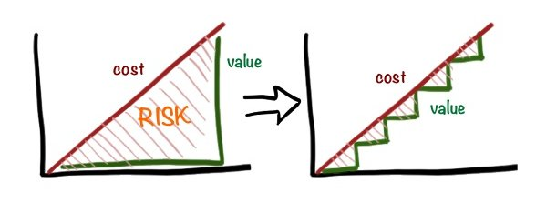
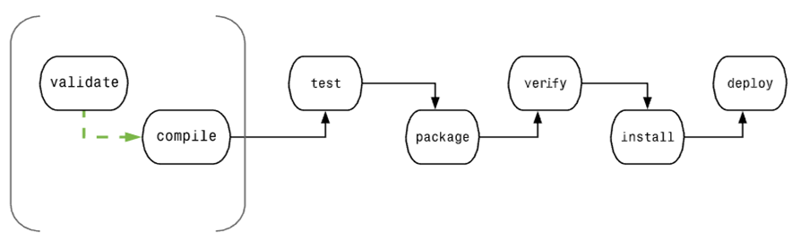
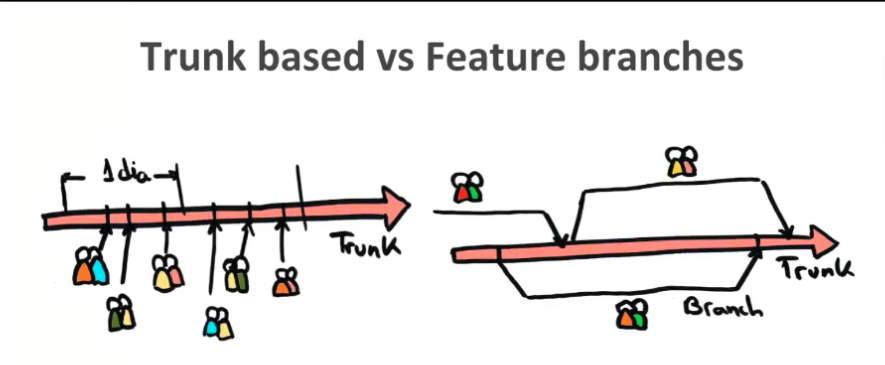
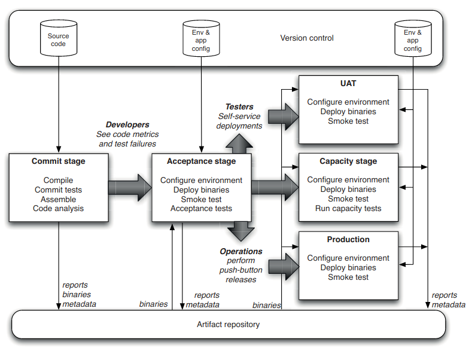
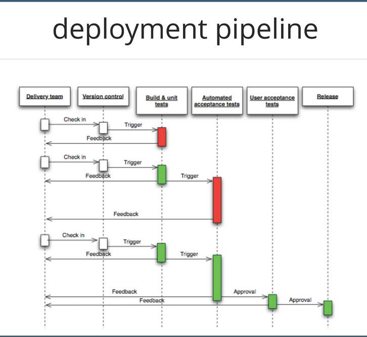
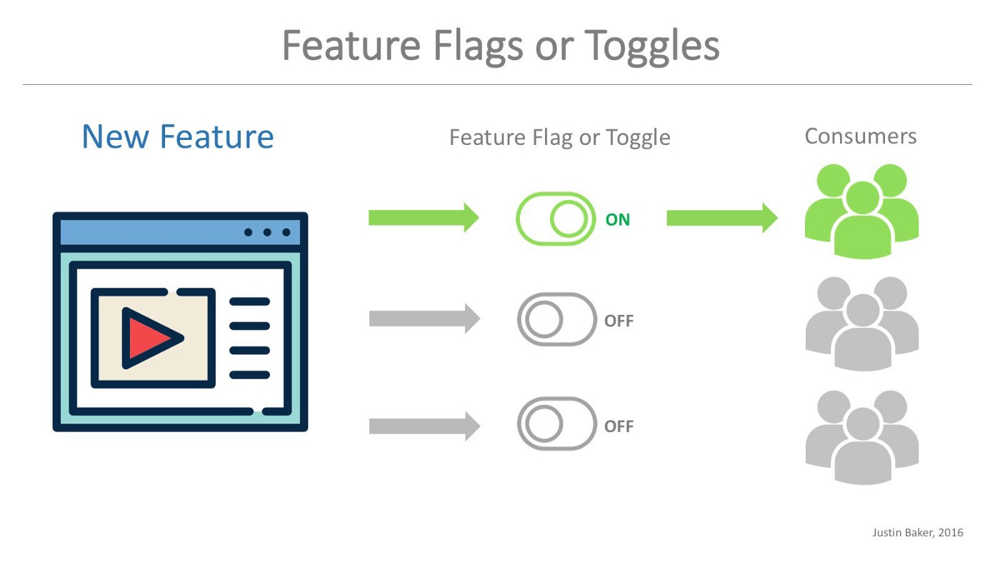

CI/CD (Integración y despliegue continuo)
Información
Estos apuntes están basados en gran medida en unos apuntes de Domingo Gallardo y se distribuyen porque su licencia así lo permite.
Continuous Delivery (CD)
Una idea fundamental de las metodologías ágiles es entregar valor frecuentemente para obtener una pronta retroalimentación del cliente. Para ello es necesario tener muy engrasados los procesos de despliegue y puesta en producción del software.
Una de las formas que facilita la optimización de la puesta en producción de software es la práctica de XP (eXtreme Programming) de Integración continua (Continuous Integration). En esta práctica los miembros del equipo integran sus commits diariamente en el proyecto y en cada integración se lanzan tests automatizados que verifican que los cambios no introducen errores.
Además de esta práctica, debemos tener también automatizados todos los procesos de compilación (build) y despliegue (deployment) de la aplicación en los distintos entornos de prueba. Esto es lo que se denomina Despliegue continuo (Continuous Deployment). En esta línea, se han popularizado herramientas como Docker o Kubernetes que facilitan el despliegue del software y su automatización y cada vez se demandan más profesionales (denominados DevOps) con capacidad de gestionar estos despliegues automatizados.
Y en los últimos años se ha dado un paso más allá y se ha comenzado a hablar de Entrega continua (Continous Delivery en inglés) con la idea de promover software que esté listo en cualquier momento para salir a producción.
En este tema veremos todos estos conceptos, con la idea de tomar un primer contacto con todos ellos. Necesitaríamos un curso (o más) para verlos en profundidad. Intentaremos al menos conocer los conceptos básicos para poder seguir profundizando en alguno de ellos en el futuro.
El problema de la puesta en producción
En las empresas tradicionales no ágiles el proceso de subir a producción una nueva versión es un proceso muy complicado y estresante. Se hace pocas veces, cuatro o cinco veces al año, durante el fin de semana cuando todos los servicios están parados.
El proceso de genera muchos trastornos y dolores de cabeza. El equipo de operaciones tiene que estar pendiente del móvil para detectar posibles problemas y caídas del sistema. Una vez puesto el software en producción el equipo de desarrollo se dedicará continuamente a corregir bugs y solucionar problemas detectados por los usuarios.
Esto no es ágil. Esto no permite conseguir lo que hemos comentado muchas veces de un ciclo corto de retroalimentación para que el cliente pueda probar rápidamente las nuevas características y se pueda comprobar su valor. Recordemos que en ambientes inciertos y no predecibles es fundamental poder validar con el cliente las nuevas funcionalidades introducidas, para adaptarse y corregir posibles errores.
La realización de entregas frecuentes también permite minimizar el riesgo. Todo el tiempo que estamos desarrollando algo sin ponerlo en producción es un riesgo acumulado. Hasta que no está en producción y ha sido aceptado por el cliente no sabemos si lo que estamos desarrollando va a ser validado o no. Cuanto menos tardemos en validarlo, menor será el riesgo.
La siguiente figura está sacada de la charla de Eduardo Ferro (@eferro) Continuous Delivery: Germinando una cultura ágil moderna.

En la figura de la izquierda se entrega mucho valor de golpe y el riesgo que se ha ido acumulando es mucho mayor que en la figura de la derecha, en la que se entregan pequeños incrementos de valor que nos permiten tener una retroalimentación más rápida y adaptar mucho mejor el producto a las necesidades de los clientes.

El proceso de puesta en producción del software depende mucho del tipo de software. En un extremo, por ejemplo, una página web se puede cambiar modificando directamente el fichero HTML en la propia máquina en la que se está ejecutando el servidor web. No hace falta ni recompilar, ni reiniciar el servidor. En el otro extremo, un software de control de una placa de un satelite espacial puede estar embebido en el propio firmware de la placa y para realizar un cambio puede ser necesario hasta volver a grabar y producir la placa.
En general, la mayoría de sistemas software se encuentran entre ambos extremos. Es importante analizar con detalle cuál es el proceso de despliegue de nuestro software, cuánto tarda en subir a producción un cambio de una línea de código y cuáles son los cuellos de botella en el proceso.

La denominada ultima milla consiste en los pasos necesarios para la puesta en producción de nuestro sistema. De nada nos sirve tener un equipo ágil que hace iteraciones y reuniones con el cliente si después tenemos un equipo de QA (Quality Assurance) con un 90% de pruebas manuales y otro de operaciones que tiene que configurar manualmente cualquier nuevo despliegue a producción y al que le cuesta dos días revertir un despliegue fallido.
Debemos analizar cuál es nuestro proceso de release y hacer lo posible por mejorarlo. Encontrar los cuellos de botella, reducir los tiempos, automatizar todo lo que podamos. De forma que pasemos de un release por trimestre a un release mensual. Y después a un release cada dos semanas. Y después a un release semanal. Y después a un posible release con cada posible cada cambio. Al final, como dice Eduardo Ferro en la charla mencionada anteriormente, el tiempo de subir un commit a producción debe ser de menos de 15 minutos y debemos de poder automatizar el proceso de puesta en producción hasta el extremo que lo podamos hacer a discreción, cuando queramos, únicamente pulsando un botón.
Un elemento central de todo el proceso de despliegue es la configuración de un pipeline de despliegue lo más automatizada posible.

el pipeline representa todos los pasos necesarios que llevan el código fuente hasta producción. Lo veremos en detalle más adelante, pero es interesante adelantarla aquí. En la imagen se puede ver:
- Compilación de todas las dependencias en binarios. En el caso de una aplicación Java podríamos tener dependencias externas (que no haría falta compilar, sólo descargarse) y dependencias de librerías internas que sí que estamos modificando y que deberíamos recompilar.
- Empaquetamiento, construcción de un único binario a partir de todos los binarios existentes. En el caso de una aplicación Java, la fase de package (por ejemplo, realizada con Maven) generaría un fichero WAR que podríamos distribuir. También, si utilizamos Docker, en esta fase generaremos una máquina Docker que podremos distribuir.
- Despliegue en distintos entornos de prueba y lanzamiento de pruebas en los distintos entornos. Cada entorno tiene su propia configuración, definida por variables de entorno o parámetros de los comandos de puesta en marcha.
- Despliegue en entorno de staging (réplica muy similar al entorno de producción).
- Despliegue en entorno de producción.
En el enfoque de entrega continua el proceso anterior está completamente automatizado y la puesta en producción se puede modular y realizar en el momento que nos interese pulsando únicamente un botón en cualquier momento.
Recordemos que la forma más tradicional de enfrentar el problema del lanzamiento es separar una rama de release de la rama de desarrollo.

Al separar la rama de release podemos seguir introduciendo cambios en
la rama de desarrollo sin afectar para nada al release. En la rama de
release se realiza todo el pipeline de despliegue y se prueba en todos
los entornos. Se introducen correcciones de pequeños bugs encontrados
y se también se puede incluir algún commit escogido de la rama de
desarrollo haciendo un cherry-pick. Finalmente, la última versión
comprobada se pasa a producción y mezcla con la rama de releases y con
la de desarrollo.
En el enfoque de lanzamiento continuo no existen ramas de release, sino que en cualquier commit de la rama principal es candidato a ser puesto en producción.

Integración continua
La Integración continua es una práctica en la que los miembros del equipo integran su trabajo frecuentemente en el proyecto. Se trata de una práctica de XP (eXtreme Programming) en la que se recomienda que cada miembro integre sus cambios diariamente. Esto lleva a múltiples integraciones cada día. Cada integración es verificada por una compilación automática (automated build) en la que se lanzan todos los tests y se detectan errores lo más rápidamente posible.
Esta práctica obliga a que todos los cambios realizados por los desarrolladores sean puestos en común continuamente, lo que promueve la compartición de conocimiento entre todos los miembros del equipo. Cuando una persona va a integrar sus cambios primero debe comprobar que éstos son compatibles con los cambios que ha habido en el proyecto. Como se integra diariamente, éstos no serán demasiados y si hay algún error será fácil de solucionar.
Sin embargo, si se desarrolla una versión separada que tarda mucho en integrarse será muy posible que cuando se realice la integración surjan muchos problemas de más difícil solución.
Trunk based vs. feature branches
Uno de los debates frecuentes relacionados con los flujos de trabajo de Git es si es más conveniente un flujo de trabajo trunk based (basado en la rama principal) o uno con feature branches (ramas de características).

La imagen anterior está también sacada de la charla de Eduardo Ferro. En ella se muestran los dos flujos de trabajo y se muestran parejas de desarrolladores porque están aplicando también pair programming.
En el flujo de desarrollo trunk based todos los desarrolladores publican sus commits continuamente (al menos una vez al día) sobre la rama principal del proyecto. Esto obliga a mantenerse continuamente al día sobre los cambios que otros están introduciendo y a tener cuidado de que nuestros cambios vayan en la misma dirección.
El desarrollador actualiza su repositorio local y comienza a programar un pequeño incremento (código y tests). Cuando termina lanza todos los tests para asegurarse de que no se ha roto nada. Antes de publicar los cambios, vuelve a actualizar el repositorio local con los nuevos cambios que se han añadido a la rama principal y vuelve a lanzar los tests. Si todo funciona bien, publica los cambios en el repositorio compartido.
Entre las ventajas de esta técnica se encuentran:
- La integración de un nuevo commit es fácil porque la rama principal ha cambiado poco desde el commit anterior que integramos. No ha habido demasiado tiempo para que el proyecto diverja mucho.
- La transparencia en los cambios hace que se detecten antes los errores
- El conocimiento del equipo evoluciona conjuntamente. Todo el mundo tiene información actualizada a diario de los cambios que se van introduciendo en el proyecto.
- Obliga a dividir los cambios grandes en cambios pequeños que se van integrando poco a poco. Esto obliga a hacer un mayor esfuerzo de diseño y utilizar mejores arquitecturas de software.
Entre los inconvenientes podemos destacar:
- Interrupciones más frecuentes en el flujo de trabajo del equipo debido a problemas introducidos por malos commits.
- No se pueden hacer pull requests en los que se haga una revisión de código.
- Necesidad más frecuente de reverts que corrigen equivocaciones.
- Obliga al equipo a una gran disciplina y a una gran madurez. No se deben buscar culpables por los errores introducidos. Los errores nos hacen aprender.
El flujo de desarrollo de ramas de características se basa en separar ramas de características de la rama principal. En cada rama de característica se desarrolla una característica y se integra en la rama principal cuando esté terminada. Esta integración se puede hacer usando un pull request.
Ventajas:
- Se integran en la rama principal cambios completos.
- Durante el desarrollo de la característica puedes aislarte del resto del desarrollo del proyecto y centrarte únicamente en la característica que estás desarrollando.
- Los fallos son locales a la rama. Un fallo no afecta al resto del equipo. Puedes tomarte un tiempo en arreglar el fallo sin que el resto del equipo se quede bloqueado.
- Posibilidad de usar pull requests y realizar revisiones de código.
Inconvenientes:
- Si las ramas tienen una duración muy larga el proyecto puede haberse modificado mucho cuando vayamos a hacer la integración, haciéndola bastante complicada.
- El conocimiento compartido sobre el código del proyecto es mucho menor y se limita a los posibles conflictos que podemos tener en la rama que hemos desarrollado.
- El primero que integra su rama no tiene problemas, los problemas los tienen las siguientes integraciones. Esto crea un efecto perverso en el que intentamos ser los primeros posiblemente a costa de menos calidad en el código.
Posiblemente, la mejor opción sea comenzar con ramas de características e ir haciéndolas cada vez más cortas, de forma que se integren cada dos o tres días como máximo. Al igual que en el enfoque de trunk based podrían no ser características completas, sino pequeños incrementos. Por ejemplo, una rama podría contener la parte de backend de la característica y después haríamos la de frontend. Y cuando el equipo se acostumbre a hacer ramas cada vez más pequeñas, podríamos plantearnos la opción de pasar a un modelo basado en trunk.
Herramientas de integración continua
Una de las características fundamentales de la integración continua es que cada vez que se integra un commit en la rama principal se debe realizar una construcción automática del proyecto, lanzándose todos los tests en el entorno de integración continua y construyéndose el binario candidato a desplegar en producción.
La forma de realizar esto es mediante las denominadas herramientas de integración continua.

Podemos elegir como herramientas de integración continua una herramienta que instalamos en nuestros propios servidores de integración (CI server) o construcción continua (continuous build server) como Jenkins o también en un servicio en la nube como GitHub Actions.
Cualquiera de estas herramientas permiten automatizar el lanzamiento de tests y la compilación automática de la aplicación y la generación de una aplicación distribuible. Esta aplicación puede ser un binario, un JAR o WAR, una máquina Docker, etc. que puede ser desplegada en distintos entornos, incluido el de producción.

El servicio de integración continua genera también notificaciones automáticas a todos los miembros del equipo indicando el estado de la compilación. También suele proporcionar un panel de control con la indicación del estado de cada build.

Generación del ejecutable
El resultado de la compilación automática realizada por el servidor de integración continua debe ser un artefacto desplegable en los distintos entornos en los que vamos a probar la aplicación. La aplicación sólo se debe compilar una única vez y el resultado debe almacenarse en un sitio accesible por cualquier proceso y miembro del equipo.
Es fundamental que las herramientas usadas para construir la aplicación puedan ser usadas desde línea de comando. De esta forma es mucho más sencillo adaptar y configurar distintos tipos de scripts de compilación (build scripts). Entre las herramientas más usadas destacamos las siguientes:
- Make (C, Unix)
- Rake (Ruby)
- Maven (Java)
- Gradle (Java, Scala, etc.)
- sbt (Scala, Play Framework)
Igual que hay distintas herramientas de compilación para los diferentes lenguajes de programación, existen diferentes formatos en los que se guardan los artefactos binarios resultantes de la compilación.

Por ejemplo, el binario resultante de una aplicación C es un fichero compilado que se ejecutará en el sistema operativo para el que haya sido compilada la aplicación, mientras que el resultante de una aplicación Java es un fichero JAR que podremos desplegar en cualquier máquina en la que tengamos instalado un JRE (Java Runtime Environment).
Además tenemos el problema añadido de generación de distintos binarios para diferentes sistemas operativos. Por ejemplo, si estamos desarrollando una aplicación de escritorio que va a funcionar en Windows, Linux y Mac deberemos generar los binarios correspondientes a esas distintas plataformas y después testearlos de forma automática en distintos ordenadores cada uno con su sistema operativo específico.
En la actualidad se está haciendo cada vez más popular la utilización de imágenes Docker como artefacto binario a distribuir y ejecutar.

Entre las ventajas de este enfoque se encuentran el ser multiplaforma (para ejecutarlas basta con tener instalado el Docker Engine) y que los contenedores (servicios en ejecución) se pueden configurar y combinar o ejecutar en clusters usando herramientas como Kubernetes.
Es una buena práctica darle a cada artefacto binario compilado un nombre distinto en el que aparezca el número de versión. En el caso de la integración continua, normalmente se le da al binario un nombre en el que aparece la fecha e incluso la hora de la compilación. De esta forma, las distintas compilaciones pueden ser identificadas de forma única.
En el caso en que nuestra aplicación dependa de paquetes externos es conveniente descargarlos y almacenarlos en un sitio centralizado de forma que no tengan que descargarse de Internet cada vez que se realiza una nueva compilación. Para ello es conveniente configurar correctamente las cachés del sistema de build que estemos utilizando.
La aplicación desplegable debe consistir en un único artefacto con el nombre correcto que contenga todo lo necesario para ejecutarse en distintos entornos de prueba y pueda ser puesto en producción. El artefacto debe almacenarse en un lugar centralizado, accesible desde los distintos entornos de forma automática. Por ejemplo, podemos usar un servidor web local y dejar el fichero en una URL concreta.
Principios y prácticas de integración continua
A continuación presentamos en forma de ítems un resumen de los elementos importantes de la integración continua que hemos visto hasta ahora.
- Desarrollo de código
- El sistema debe siempre poder ser construido (build) y probado con éxito.
- Todo el mundo hace merge de los cambios con frecuencia.
- Después de cada commit, el sistema se integra inmediata y automáticamente.
- Se desarrolla el sistema en pequeños incrementos.
- Testing
- Los desarrolladores prueban su código en sus espacios de trabajo privados.
- Después mezclan los cambios en el repositorio.
- Servidor de integración continua (CI server):
- Monitoriza el repositorio y comprueba los cambios cuando ocurren.
- Construye el sistema y ejecuta las pruebas unitarias y de integración.
- Informa al equipo de la construcción con éxito o de los fallos.
- Errores en los build
- El equipo arregla el problema lo antes posible.
- Continuar para integrar y probar continuamente durante todo el proyecto.
- El último ejecutable compilado debe estar fácilmente disponible
- El resultado de la compilación debe ser un artefacto ejecutable disponible para desplegar en distintos entornos, incluso en producción.
Configuración del despliegue
Para hacer integración continua es necesario tener múltiples entornos. En el entorno de trabajo del desarrollador se pueden lanzar los tests más rápidos y utilizar una configuración en la que usemos una base de datos en memoria (como H2) que acelere la velocidad de los tests que utilicen base de datos.
Se puede configurar un primer entorno de integración continua para que se ejecuten en él tests más lentos y con una configuración más parecida a la del entorno de producción. Por ejemplo, se puede utilizar una configuración en la que se utilice una base de datos similar a la que se usa en producción, poblada con datos de prueba. En este entorno se deben lanzar los tests rápidos y también tests más lentos de integración.
Y después tendremos otros entornos cada vez más similares al entorno de producción en los que también se realizarán todos los tests automáticos y otros tests manuales necesarios para tener la confirmación de que todo está funcionando correctamente.
En todos estos entornos deberemos instalar la misma aplicación compilada, y tendremos que modificar en cada caso su configuración. Es importante tener la capacidad de automatizar tanto la gestión de entornos de despliegue (arrancar las bases de datos correctas, configurar puertos, etc.) como la instalación y ejecución de la aplicación en el entorno.
Antiguamente los distintos entornos eran máquinas físicas distintas, con configuraciones distintas previamente instaladas en cada una de ellas. Hoy en día es mucho más común utilizar entornos virtuales fácilmente construibles a partir de scripts y código usando herramientas de virtualización como Docker, Kubernetes, etc. También es habitual la utilización de entornos en la nube (Heroku, GitHub Actions, Amazon Web Services, etc.) tanto para prueba como para producción.
Entornos de despliegue
Podemos diferenciar diferentes tipos de entornos (configuración de servicios y servidores) en los que se despliega y prueba el build de la aplicación. En general, ordenados de menor a mayor parecido a producción, podemos diferenciar.
- Local: ordenador del desarrollador. Se ejecutan tests unitarios de la característica que se está desarrollando.
- Desarrollo/Trunk/Master: ordenador de integración continua conectado a la rama de desarrollo en el que se ejecutan todos los tests unitarios continuamente.
- Integración: Entorno en el que se sustituyen los mocks y bases de datos de memoria por servicios reales, aunque con copias parciales de los datos de producción.
- Test/QA: Entornos en los que se realizan pruebas funcionales, de interfaz de usuario, de performance o de seguridad, entre otros. Pueden ser manuales y/o automatizados.
- Stage/Preproducción: Entorno idéntico al de producción en el que se hace la última validación de la nueva versión a desplegar a producción. Copia de la base de datos de producción y con servidores similares a los de producción, para poder comprobar rendimiento.
- Producción: Entorno que usan los clientes reales de la aplicación.
Configuración de la aplicación
La aplicación debe poder funcionar en distintos entornos sin tener que ser recompilada. Para ello es necesario poder configurar su funcionamiento definiendo parámetros que podamos modificar previamente a su ejecución sin tener que recompilarla.
Existen multitud de elementos que podemos necesitar configurar dependiendo del entorno en que queremos que funcione la aplicación. Por ejemplo:
- URL de conexión a la base de datos
- Usuario y contraseña de conexión a la base de datos
- Puerto en el que la aplicación va a recibir las peticiones
- Direcciones de los servicios a los que debe conectarse (por ejemplo, servicio SMTP de correo electrónico)
En cada entorno en los que va a funcionar la aplicación estos parámetros van a tener unos valores distintos que hay que pasarle a la aplicación cuando se ponga en funcionamiento.
Existen diversas formas de definir estas propiedades. Las más usuales son:
- Mediante ficheros de configuración de la aplicación.
- Mediante variables de entorno cuyos valores establecemos con scripts antes de lanzar la aplicación.
- Mediante argumentos del comando que lanza la aplicación
Estas distintas configuraciones deben estar también guardadas en el control de versiones, igual que el código de la aplicación, para poder también controlar su evolución y sus cambios.
Configuración de imágenes Docker
Docker también tiene muchas estrategias que permiten configurar la
ejecución de una imagen. Una de las más utilizadas es hacer que la
imagen utilice variables de entorno que pueden ser modificadas en
al lanzar el contenedor. Para ello debemos definir en la imagen estas
variables con el comando ENV, pudiendo dar valores por defecto.
Por ejemplo, podemos definir el siguiente Dockerfile:
Creamos la imagen:
Si lanzamos la imagen muestra el saludo por defecto:
Y podemos configurar el saludo de varias formas. Por ejemplo,
indicando el valor del parámetro al hacer run:
O guardando el valor del parámetro en un fichero de propiedades que
pasamos al ejecutar la imagen. Por ejemplo, en el fichero
propiedades.txt escribimos lo siguiente:
Y ejecutamos la imagen de la siguiente forma:
Entrega continua
El concepto de Entrega continua (Continuous Delivery) es una extensión de la Integración continua que se popularizó a raíz del libro que publicaron en 2010 Jez Humble y David Farley (ver las referencias).

Es un concepto que parte de la integración continua para llegar a una automatización completa de la puesta en producción. El objetivo es conseguir una puesta en producción (release) del software:
- Poco arriesgada
- Frecuente
- Barata
- Rápida
- Predecible
- Reproducible
En palabras de Jez Humble, la entrega continua consiste en:
“Reduce the cost, time, and risk of delivering incremental changes to users”
Jez Humble (2013), Charla Adopting Continuous Delivery
Otra frase muy importante, que ya hemos comentado alguna vez:
“How long would it take your organization to deploy a change that involved just one single line of code? Do you do this on a repeatable, reliable basis?”
Mary Poppendieck
Algunas técnicas que se utilizan en la Entrega continua (muchas de ellas ya las hemos visto):
- Pequeños cambios que se despliegan continuamente
- Todos los builds son candidatos al release
- Todo en el control de versiones (se debe poder probar cualquier release)
- Pipelines de despliegue (deployment pipelines)
- Integración continua: automatización de builds, tests, despliegues, entornos
Pipeline de despliegue
Tal y como hemos comentado cuando hablábamos de integración continua, un elemento central es de la automatización es el pipeline de despliegue. un pipeline de despliegue es una implementación automatizada del proceso de construcción, despliegue, prueba y lanzamiento de nuestro sistema.
La utilización de un pipeline de despliegue garantiza la visibilidad de todo el proceso, lo que garantiza un feedback temprano y un control continuo del mismo.
Explicación del libro de Jeff Humble:
Cada cambio que se realiza sobre la configuración de la aplicación, su código fuente o sus datos, lanza la creación de una nueva instancia de el pipeline. Uno de los primeros pasos en el pipeline es crear los binarios y los instaladores. El resto de el pipeline ejecuta una serie de tests sobre los binarios para probar que pueden ser lanzados. Cada test que pasa el candidato a release nos da más confianza de que funcionará correctamente esta combinación particular de código binario, información de configuración, entorno y datos. Si el candidato a release pasa todos los tests, puede ser lanzado.
En el libro de Humble y Farley se muestra el siguiente esquema que representa sus distintos elementos.

- En la parte superior se muestra el sistema de control de versiones, en donde se almacena el código del proyecto y los datos de las distintas configuraciones de los entornos y de la aplicación. Las configuraciones de los entornos y de la aplicación se deben guardar en el sistema de control de versiones para gestionar su evolución y modificación de la misma forma que gestionamos la evolución del código.
- En la parte inferior se muestra el repositorio de artefactos en donde se almacenan los binarios de la aplicación. Puede ser, por ejemplo, Docker Hub en el caso de ser una aplicación dockerizada.
- En la fase de commit el código se compila y se lanzan los tests unitarios. Se generan los binarios que se almacenan en el repositorio de artefactos.
- En la fase de aceptación se configuran y despliegan los binarios en un entorno similar al de producción. Se realizan test de aceptación/integración y se valida la aplicación y se deja lista para ser publicada a producción por parte de Operaciones.
- En la fase de UAT (User Acceptance Testing) se realizan pruebas manuales en un entorno lo más parecido posible al de producción.
- En la fase capacidad se realizan tests de rendimiento.
- El binario se despliega en producción si todas las fases anteriores se pasan con éxito.
En la siguiente figura se muestra un ejemplo de posible secuencia de despliegue:

Son muy útiles los tableros de control de el pipeline de despliegue, como por ejemplo el que proporciona Jenkins.

Pequeños cambios
Tal y como hemos comentado en la introducción del tema, una práctica fundamental de los equipos que utilizan las técnicas de entrega continua es subir a producción continuamente pequeños cambios con los que se van introduciendo poco a poco las nuevas funcionalidades.

Por ejemplo, en la charla de Juan Ignacio Sánchez Continuous Integration at CartoDB (vídeo) se explica cómo es el proceso de integración continua en Carto, una importante empresa española de gestión de datos geográficos.
Algunas de las métricas que muestra en la charla reflejan claramente cuál es el funcionamiento de la integración continua en la empresa. Su producto opensource más importante es CartoDB (enlace a su repositorio GitHub). En la época de la charla el producto integraba una media de 22 pull requests semanales y 15 despliegues en producción.
Si todos los cambios son pequeños, ¿cómo se introducen los cambios grandes en el proyecto?. Por ejemplo, nuevas características complejas en las que se necesitan combinar distintas funcionalidades elementales.
Es posible ir desarrollando, probando y colocando las piezas en el código (sin mostrar en la interfaz de usuario) para que el sistema evolucione hacia un momento futuro en sea fácil introducir una característica totalmente nueva mediante un pequeño cambio. Como dice Kent Beck:
Make the change easy, then make the easy change.
Para ello podemos usar las siguientes estrategias:
- Codificación y prueba de las pequeñas funcionalidades por separado.
- Buen diseño de código, por ejemplo seleccionar una implementación concreta utilizando interfaces y factorías, pero dejar la estructura lista para introducir futuros cambios.
- Pequeños cambios en las APIs compatibles con los tests de regresión.
- Uso de mocks.
- Interruptores de características.

Esta última técnica es muy interesante. Consiste en definir interruptores o flags booleanos en el código que hagan que ciertas características se muestren o no en la aplicación dependiendo de si los flags están o no activos.
En este artículo se puede encontrar una explicación en profundidad de múltiples técnicas usadas para implementar los interruptores de características. Dependiendo de la técnica es posible hasta definir interruptores que se puedan modificar en tiempo de ejecución e incluso que se puedan mostrar o no la funcionalidad a según qué usuarios implementando un sistema de canary release.
Canary release

La idea del canary release consiste en configurar un sistema de despliegue que permita mantener simultáneamente en producción dos versiones de la aplicación. En el caso de una aplicación web, podríamos configurar un proxy o router intermedio que se encargue de encauzar las peticiones de los usuarios a una versión de la aplicación o a otra.
Cuando se lanza una característica nueva se puede configurar el proxy para que sólo sea probada por una pequeña cantidad de usuarios y detectar posibles errores en este despliegue reducido. Cuando se haya comprobado con este pequeño grupo que todo funciona correctamente se modifica la configuración del proxy para que todos accedan a la nueva versión.
La configuración del proxy puede llegar a ser bastante compleja, haciendo el filtro de usuarios en función de parámetros que nos interesen (localización, tipo de usuario, etc.).
Este sistema también puede utilizarse, junto con el de interruptores de características, para realizar pruebas A/B de nuevas características.
DevOps

Tradicionalmente el trabajo de los desarrolladores y el de los técnicos de operaciones (responsables de la puesta en producción del sistema, monitorización de servidores, etc. ) son contrapuestos.
- Developers:
- Su trabajo es añadir nuevas características.
- Trabajan en entornos locales (“en mi máquina funciona”).
- Utilizan herramientas y lenguajes que permiten abstraer y automatizar.
- Operations:
- Su trabajo es mantener el sitio web seguro, estable y rápido.
- Detectar problemas, apagar fuegos.
Los desarrolladores quieren introducir cambios rápidamente en el sistema, mientras que a los técnicos de operaciones les gustaría mantener el sistema lo más estable posible.
Los profesionales DevOps representan una nueva filosofía de trabajo, que combina elementos propios de los desarrolladores y de operaciones, incorporando todas las nuevas técnicas de las que hemos estado hablando en este tema y herramientas denominadas Infrastructure-as-code como Docker, Kubernetes, Ansible, Terraform,etc. en las que podemos definir la configuración de entornos y servidores usando código y ficheros almacenables en un sistema de control de versiones, en lugar de tener que configurar físicamente el hardware.
Principos y buenas prácticas
En la charla mencionada anteriormente sobre prácticas de integración continua en Carto, Juan Ignacio Sánchez lista 10 buenas prácticas que ellos están siguiendo. Muchas ya las hemos visto, pero es interesante repasarlas todas juntas, validadas por la experiencia de su éxito en una empresa puntera de desarrollo de software. Son las siguientes:
- Mantener un repositorio de código
- Automatizar la compilación
- Hacer la compilación auto-testeable (mediante test automáticos)
- Todo el mundo realiza commits en la rama principal todos los días
- Cada commit en la rama principal debe ser compilado
- Mantener la compilación rápida
- Testear en un clon del entorno de producción
- Hacer fácil de obtener los últimos productos compilados
- Todo el mundo puede ver los resultados de las últimas compilaciones
- Automatizar el despliegue
Consejos adicionales
La integración continua y el despliegue continuo son dos conceptos que pueden convertirse en aliados muy poderosos para nuestro equipo si ponemos los medios necesarios.
Es obvio que nada de esto es posible sin una batería de pruebas sólidas, extensas y consistentes. Si no disponemos de pruebas unitarias de calidad y que cubran la totalidad de nuestro código, lo más probable es que nuestro CI nos de muchos falsos positivos (fallos que no han sido detectados por las pruebas unitarias), que a su vez provocará que se desplieguen fallos en nuestros entornos de pre-producción y producción.
Por ejemplo, si el proceso de integración continua se ejecuta en nuestro servidor de Gitlab en vez de en el ordenador de cada desarrollador de nuestro equipo, estaremos facilitando la tarea de comprobación automatizada de error. Aún más importante, si dicho proceso se ejecuta en pocos minutos, estaremos creando un hábito entre las personas del proyecto de enviar más a menudo sus cambios al repositorio, ya que hacerlo les permitirá obtener una visión rápida sobre la calidad de su trabajo. Esto a su vez hará que la frecuencia de los cambios que se envían al repositorio sea más alta, mientras que el tamaño de cada cambio enviado sea más pequeño. Las tareas de revisión se harán más amenas y fáciles, y por lo tanto, mejora la velocidad con la que se integran dichos cambios en «develop». Nuestro equipo de control de calidad podrá tener un flujo continuo de trabajo, lo cual reducirá los tiempos «muertos» (personas «bloqueadas» a la espera de que otras personas terminen su trabajo).
Por último, cabe decir que no es obligatorio que el despliegue continuo tenga lugar en cuanto un cambio se mezcle en las ramas de «develop» o «master». Existen muchos casos en los que el líder del equipo (o una persona con rol similar) deberá tomar la decisión de dar luz verde al proceso de despliegue en base a más factores. Es decir, el proceso en sí puede estar automatizado (es lo mas recomendable), pero la acción que desencadena el despliegue puede ser humana.
Referencias
- Charla de Eduardo Ferro (2020): Continuous Delivery: Germinando una cultura ágil moderna.
- Martin Fowler (2006): Continuous Integration
- Jez Humble y David Farley (2010): Continuous Delivery
- Integración continua y despliegue continuo